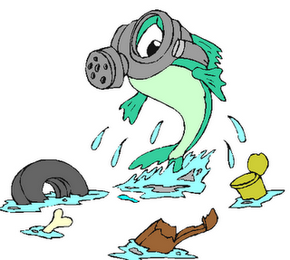

Para combatir la contaminación tenemos que hacer lo siguiente:Crear conciencia ciudadana,
No quemar ni talar plantas,
Colocar la basura en los lugares apropiados,
Regular el servicio de aseo urbano,
Controlar el uso de fertilizantes y pesticidas,
Crear vías de desagüe para las industrias que no lleguen a los mares o ríos utilizados para el servicio o consumo del ser humano o de los animales,
Controlar los derrames accidentales de petróleo,
Controlar los relaves mineros,
Reciclar objetos (darles un nuevo uso),
Tomar y generar conciencia de lo que está sucediendo,
Realizar campañas de apoyo,
Evitar el uso de aerosoles,
Tener sentido de responsabilidad.
